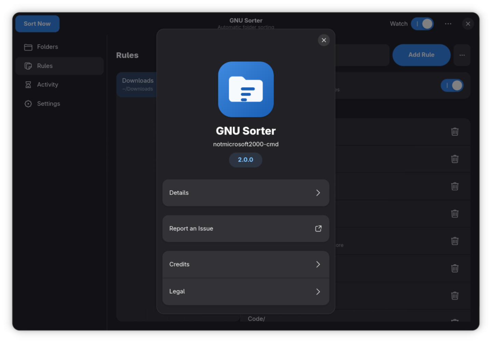

Documentation
GNU Sorter documentation
GNU Sorter is an advanced file-sorting utility. You define rules that describe where files should go, and it organizes the contents of the folders you choose. This page covers installing it, writing rules, and driving it from the command line.
Overview
GNU Sorter works with one or more folders and a set of rules.
When a file appears in a watched folder, it is matched against the rules for that folder and
moved into the destination the rule describes. Files that match nothing are collected in a
Needs-review folder so nothing is silently lost.
You can configure everything through a graphical application or the command line. Both use the same configuration, so your rules behave the same either way.
Requirements
- The Linux desktop build uses GTK4 and libadwaita.
- The installer places everything inside your user account; no root access is required.
- A native Windows build is published from the separate gnu-sorter-windows repository. See the download page.
Installation
The quickest way installs from a single command: it downloads the installer script,
clones the repository, and runs install.sh for your user account.
See the download page for both platform options.
curl -fsSL https://raw.githubusercontent.com/notmicrosoft2000-cmd/gnu-sorter/main/install-gnu-sorter.sh | bashAdd --service to enable background watching on login:
curl -fsSL https://raw.githubusercontent.com/notmicrosoft2000-cmd/gnu-sorter/main/install-gnu-sorter.sh | bash -s -- --service
To install by hand instead:
-
Clone the repository and enter it.
git clone https://github.com/notmicrosoft2000-cmd/gnu-sorter.git && cd gnu-sorter -
Run the installer. Add
--serviceto enable background watching when you sign in../install.sh -
Launch the application.
gnu-sorter --guiYou can also start it from your applications menu.
Quick start
Using the GUI
- Open Folders and choose Add Folder to select a directory.
- Open Rules and use Add Rule to send a matching file type to a destination.
- Open the advanced rule editor for multiple extensions, name patterns, or regular expressions.
- Apply a preset if you want a sensible starting point.
- Use Sort Now to run once, or toggle Watch to sort new files automatically.
Using the CLI
gnu-sorter --sweep # sort the configured folders once
gnu-sorter --watch # keep watching for new filesThe interface
The desktop application is organized into a few areas: the folders you organize, the rules that sort them, the activity log and the settings. The screenshots below are from the Linux (GTK4 / libadwaita) build; the native Windows build offers the same four areas (Folders, Rules, Activity and Settings).



Rules
A rule has a destination folder and at least one condition that decides which files belong there.
- Extension matching
- Send files with a given extension to a folder, for example every
.jpgtoImages. A rule can list several extensions. - Name matching
- Match part of a file name, or a regular expression, to catch files that are not distinguishable by extension alone.
- Fallback
- Files that match no rule are placed in
Needs-review, so you can decide what to do with them.
Per-folder rules
Each folder can keep its own rules, or inherit a shared default set. This lets a Downloads folder follow one scheme while a project folder follows another. You can give a folder its own copy of the defaults and edit it, or revert it to the shared rules at any time.
Presets
Presets provide a starting point that you can edit afterwards.
- GNOME defaults — a broad set covering common document, media, and archive types.
- Photography — focused on image and video files.
- Code projects — source files, documents, and archives.
- Empty — start from no rules at all.
Configuration
Your rules, folders, and settings are stored in your configuration directory:
~/.config/gnu-sorter/The journal of moves, used for undo, is kept separately:
~/.local/share/gnu-sorter/history.logUninstalling keeps these by default, so your rules survive a reinstall.
CLI reference
These commands are drawn from the project README. Run gnu-sorter --help for the complete, current reference.
| Command | Description |
|---|---|
gnu-sorter --gui | Launch the graphical application. |
gnu-sorter --list-rules | List the default template rules. |
gnu-sorter --list-rules --root ~/Downloads | View the effective rules for a specific folder. |
gnu-sorter --add-rule <name> --folder <folder> --root <path> | Add a rule to a specific folder only. |
gnu-sorter --attach-rules --root <path> | Revert a folder to the shared template rules. |
gnu-sorter --sweep | Sort the configured folders once. |
gnu-sorter --watch | Watch the folders and sort new files. |
gnu-sorter --undo-last <n> | Undo the last n moves. |
gnu-sorter --help | Show all available options. |
Uninstalling
Run the uninstaller from the repository:
./uninstall.sh
Configuration and history are kept by default. Add --purge to also remove
~/.config/gnu-sorter/ and ~/.local/share/gnu-sorter/history.log.
Troubleshooting
- A file was not moved
- GNU Sorter waits for a file to stop changing before sorting it. Files that are still downloading, hidden, or that match no rule may be left in place. Unmatched files are collected in
Needs-review. - A move needs to be reversed
- Every move is journaled. Use Undo in the interface, or
gnu-sorter --undo-last 1on the command line. - Rules did not apply to a folder
- Check whether the folder inherits the default rules rather than keeping its own set.
Getting help
The best place to ask questions, report a problem, or contribute is the project repository on GitHub.